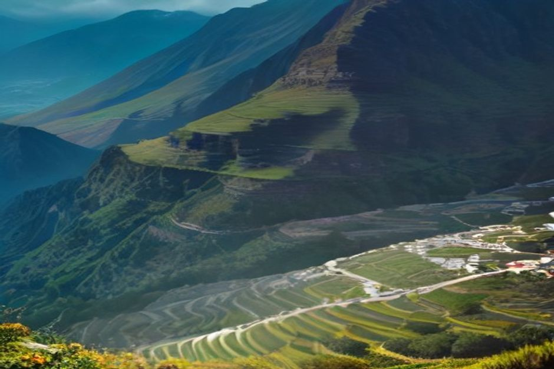

Curral das Freiras es un pueblo escondido dentro de un cráter volcánico extinto en el interior montañoso de Madeira, rodeado de picos por todos lados y a solo media hora de Funchal. Es una de las escapadas más espectaculares desde la costa de la isla, y esconde una historia realmente curiosa detrás de su nombre.
¿Qué es Curral das Freiras?
Curral das Freiras es una freguesia y un pueblo situado a unos 461 metros sobre el nivel del mar, en el fondo de lo que fue una enorme caldera volcánica en el centro de Madeira. Paredes de roca casi verticales, con algunos de los picos más altos de la isla, se levantan a su alrededor por todos lados, y por eso durante siglos la única forma de entrar fue a pie o en mula por estrechos senderos de montaña. Hoy es uno de los destinos de interior más visitados de la isla, no por un monumento concreto, sino por el paisaje en sí: un pueblo verde y en terrazas que parece imposible de alcanzar.

¿Por qué se llama Curral das Freiras el Valle de las Monjas?
Porque fue, literalmente, un refugio de monjas. En 1566, corsarios franceses asaltaron Funchal y las monjas del convento de Santa Clara de la ciudad huyeron tierra adentro, a este remoto valle encerrado entre montañas, para esconderse: un lugar tan cerrado y de tan difícil acceso que era un escondite natural. El nombre Curral das Freiras, «corral de las monjas», ha perdurado desde entonces, y sigue siendo lo primero que te contará cualquier lugareño sobre el pueblo.
¿Cómo llegar a Curral das Freiras desde Funchal?
En coche, en unos 20 o 30 minutos. Curral das Freiras está a unos 15km al norte de Funchal y, durante la mayor parte de su historia, llegar hasta allí implicaba una larga carretera de montaña pegada al acantilado. Eso cambió en 2004, cuando se abrió un túnel de carretera de 2.4km que atraviesa directamente la pared del cráter y redujo un trayecto largo y de nervios a unos pocos minutos. Lo más cómodo es un coche de alquiler o un taxi; el autobús de la línea 81 de Rodoeste también sale de Funchal, aunque tarda cerca de 35 minutos.
¿Qué es el mirador de Eira do Serrado y hay que parar allí?
Sí, es la primera vista clásica del valle. Eira do Serrado es un miradouro a unos 1,095 metros de altitud, al que se llega por su propia carretera señalizada por encima del cráter, y desde el aparcamiento un paseo corto y fácil te lleva hasta una plataforma que se asoma directamente a Curral das Freiras y a los picos que lo encierran. Es la postal del valle, y la mayoría de los visitantes paran aquí antes o después de bajar al pueblo, porque las dos vistas, desde arriba y desde el fondo, son experiencias completamente distintas del mismo lugar.
¿Se puede bajar al cráter a pie en lugar de en coche?
Sí. La Vereda das Voltas baja en zigzag desde Eira do Serrado hasta el fondo del pueblo, y ofrece a los senderistas una versión más lenta y cercana del descenso que hacen los coches por carretera. Para algo más largo, el PR12 (Caminho Real da Encumeada) es un sendero exigente de 12.5km que va entre unos 830 y 1,323 metros de altitud por el lado de Boca da Corrida del cráter, bordeando las montañas que separan Curral das Freiras del paso de Encumeada: una caminata de día completo, no una escapada rápida, con vistas al valle que la carretera nunca te da.
¿Qué se come en Curral das Freiras?
Castañas. El clima más fresco de montaña del valle les sienta mucho mejor a los castaños que la costa, y las cocinas locales montan todo un menú a su alrededor: sopa de castañas, tarta de castañas y un licor de castaña (licor de castanha) que se vende en botellitas en las tiendas y cafés del pueblo. La trucha (truta), criada en los fríos arroyos del valle, es el otro plato que los lugareños recomiendan. Es una oferta gastronómica muy distinta de la costa de espetada y poncha, y por sí sola merece el viaje si te importa comer bien.
¿Cuándo es la Fiesta de la Castaña en Curral das Freiras?
La Festa da Castanha dura dos días, a finales de octubre y principios de noviembre (del 31 de octubre al 1 de noviembre en las últimas ediciones), y la organiza la Casa do Povo de la freguesia. El pueblo se llena de puestos de castañas asadas al momento, licor de castaña, tarta de castaña y ginjinha, y es una de las pocas épocas del año en que Curral das Freiras se llena de gente. Si estás en Madeira a caballo entre octubre y noviembre, merece la pena organizar la visita en torno a la fiesta.
¿Merece la pena Curral das Freiras como excursión de medio día?
Sí, si quieres ver una cara de Madeira totalmente distinta de la costera. Entre el trayecto de subida, la parada en Eira do Serrado, un paseo por el pueblo y la comida, la mayoría de los visitantes calcula de tres a cuatro horas puerta a puerta desde Funchal, así que se hace sin problema en una mañana o una tarde, sin necesidad de dedicarle el día entero. Combina de forma natural con otras paradas de montaña como el teleférico de Monte o el Pico dos Barcelos a la vuelta, ya que ninguna exige un gran desvío de la misma carretera.
¿Se puede combinar con un día en el mar?
No en la misma mañana: Curral das Freiras es una escapada de montaña hacia el interior, y la costa es un mundo aparte. La mayoría de los visitantes dedica al cráter una excursión de medio día y reserva otro día para el mar: un paseo privado en barco con Chifbay desde la Marina do Funchal recorre Cabo Girão, calas escondidas y delfines, justo en el extremo opuesto del paisaje de Madeira respecto a un pueblo encerrado entre montañas a 461 metros; y es precisamente este contraste, del cráter a la costa, lo que hace que valgan la pena unos días aquí.
Casi toda Madeira te enseña el océano. Curral das Freiras te enseña cómo es la isla cuando le das la espalda.
No es una parada de cinco minutos ni queda de camino a ningún otro sitio, pero un pueblo de cráter que escondió a unas monjas de los piratas, con licor de castaña esperando al fondo, se gana con creces su medio día.